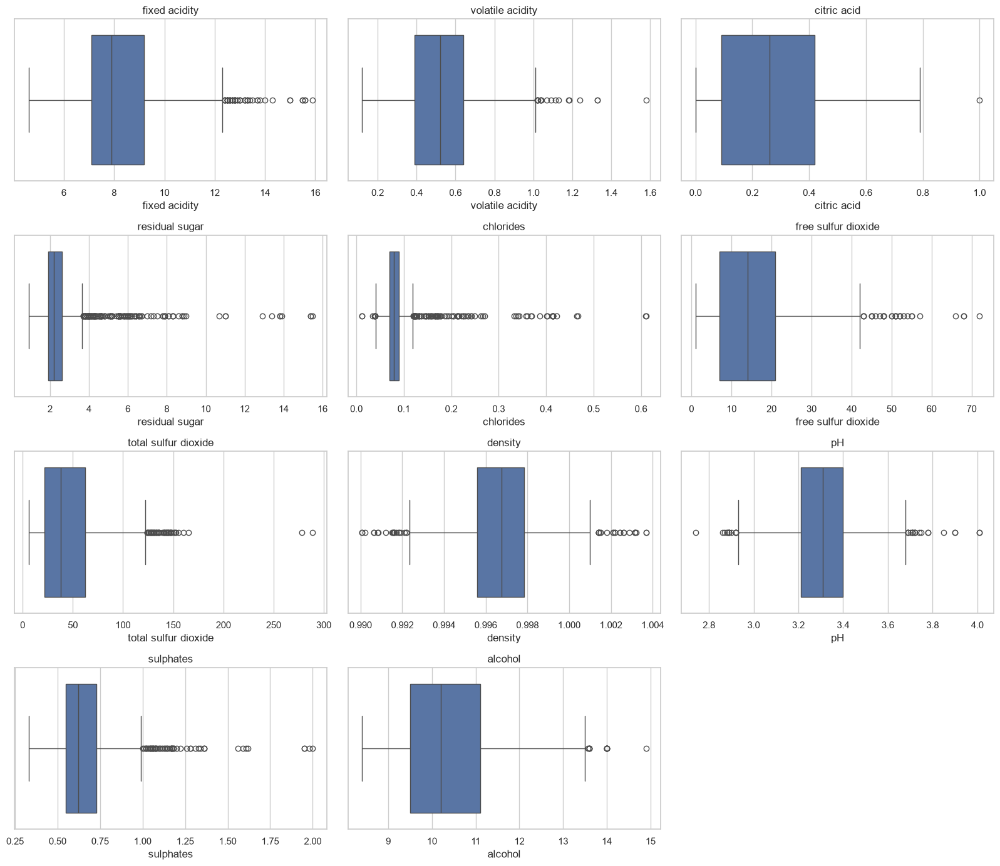
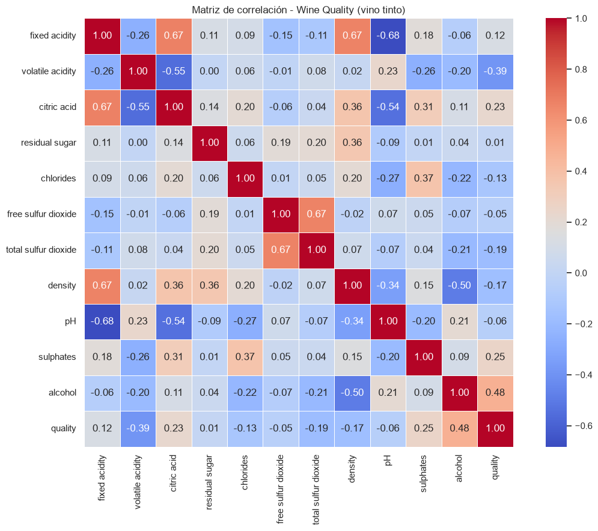

⚙️ Simulador interactivo
📊 Resultado
—
Calidad estimada (~ —) · —
El modelo ganador (polinomial grado 3) usa solo alcohol, acidez volátil y sulfatos; el resto de controles se muestran por completitud (la app Streamlit recibe las 11 variables).
📈 Análisis exploratorio (EDA)


🔢 Correlación con quality
| Variable | Correlación |
|---|
🔬 VIF (multicolinealidad)
| Variable | VIF |
|---|
VIF > 5 ya es alerta; ninguno superó 10. fixed acidity (7.8) y density (6.3) son los más redundantes.
🏆 Comparativa de modelos (train / test)
| Modelo | R² train | R² test | RMSE train | RMSE test | MAE train | MAE test |
|---|---|---|---|---|---|---|
| Regresión Lineal Múltiple | 0.3480 | 0.4032 | 0.6513 | 0.6245 | 0.4996 | 0.5035 |
| Polinomial grado 2 | 0.3517 | 0.4071 | 0.6495 | 0.6225 | 0.5021 | 0.5083 |
| Polinomial grado 3 ✅ | 0.3716 | 0.4249 | 0.6394 | 0.6131 | 0.4952 | 0.4975 |
El polinomial grado 3 ganó en test (R² 0.4249), pero la mejora frente a la lineal es modesta y su mayor número de términos implica riesgo de overfitting.